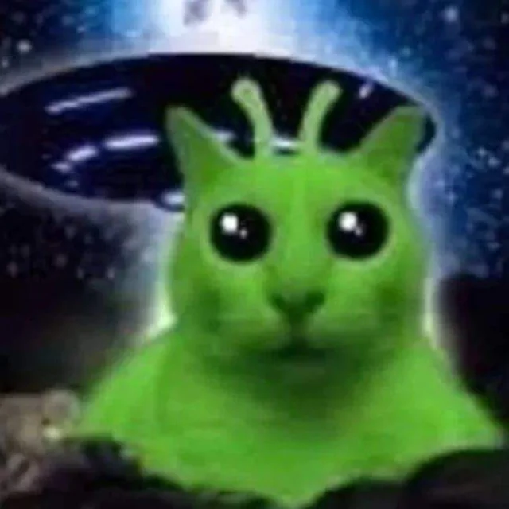

A dúvida sobre a existência de seres fora da Terra brotou da ancestral curiosidade humana perante a vastidão do universo, consolidando-se com a revolução científica que pôs o Sol, não a Terra, como o centro do sistema solar. Filósofos gregos antigos, tipo Epicuro, já falavam de vários mundos, mas foi notar que estrelas eram sóis distantes que impulsionou a lógica de que outros mundos poderiam abrigar vida.
As investigações científicas modernas dispararam por volta da metade do século XX, impulsionadas pelo avanço da radioastronomia e pela "era espacial". Em 1960, Frank Drake liderou o Projeto Ozma, a primeira tentativa organizada de achar sinais de rádio extraterrestres, dando início ao que hoje se chama SETI Busca por Inteligência Extraterrestre. Rapidamente, em 1961, surgiu a Equação de Drake, pretendendo calcular a probabilidade de haver civilizações inteligentes.
Atualmente, a busca focou na detecção de "bioassinaturas" em exoplanetas, utilizando telescópios espaciais modernos tipo o James Webb.
As descobertas recentes chamaram a atenção: detectaram gases como sulfeto de dimetila em planetas distantes, tipo K2-18b, que pode indicar vida lá fora. Por outro lado, as buscas se diversificam, algumas vezes se concentrando em procura de micro-organismos em luas geladas, tipo Europa, que gira ao redor de Júpiter; outras, investigando exoplanetas em zonas onde a vida seria possível, à procura de vida inteligente ou talvez apenas vida microbiana.
No Sistema Solar, a existência de vida fora da Terra não foi confirmada, mas indícios apontam para possíveis locais. Marte apresenta rochas que, segundo o rover Perseverance da NASA, contêm indícios químicos de micróbios antigos, embora seja possível explicar isso pela geologia do planeta. Vênus possui fosfina em suas nuvens, o que sugere a possibilidade de vida, mas sua superfície é absolutamente infernal.
Luas como Europa (Júpiter), que abriga um oceano sob uma camada de gelo que é duas vezes maior do que o da Terra, Enceladus (Saturno), conhecido por suas plumas orgânicas, e Titã, que possui lagos de metano, estão entre os alvos de missões como a Europa Clipper. Até 2026, sem evidências, mas as investigações prosseguem, destacando a singularidade do nosso planeta.
Exoplanetas na zona habitável são candidatos principais, com água líquida possível. O James Webb detectou em 2025 dimetil sulfeto em K2-18b, indício forte de biologia. TRAPPIST-1 tem mundos rochosos com atmosferas promissoras. Proxima Centauri b sugere oceanos potenciais. Até 2026, sem confirmação, mas estatísticas favorecem vida microbiana na Via Láctea.
Esses dados transformam a astrobiologia além do Sistema Solar. TRAPPIST-1e mostra vapor d'água e temperaturas amenas. Dimetil sulfeto é raro sem vida na Terra. LHS 1140 b indica superfícies oceânicas. PLATO buscará terras habitáveis em 2026. Espectroscopia revela atmosferas ricas em oxigênio.
A busca continua com telescópios avançados e análise espectral. Milhares de exoplanetas foram catalogados, muitos rochosos. Densidades indicam composições terrestres. Observatórios terrestres complementam o Webb. Hipóteses evoluem com precisão inédita. Distâncias vastas não impedem detecções químicas. Vida simples pode abundar no cosmos.
Em primeiro lugar, aborda a questão existencial mais profunda da humanidade: estamos sós no universo? Encontrar qualquer forma de vida em exoplanetas como K2-18b mudaria completamente nossa perspectiva filosófica, religiosa e cultural, indicando que a vida não é uma ocorrência rara na Via Láctea, mas algo comum. Isso uniria diferentes gerações em uma missão cósmica comum.
Além disso, promove o progresso científico e tecnológico. Para analisar os enormes volumes de dados, as descobertas do dimetil sulfeto do James Webb precisam de inovações em espectroscopia e inteligência artificial. Missões como PLATO aprimoram a busca por planetas habitáveis, resultando em inovações nas áreas de energia, medicina e comunicação.
Por fim, clama por proteção à Terra, nosso único lar conhecido. Quando reconhecemos a raridade da vida, lutamos contra a poluição e as mudanças climáticas, colocando a sustentabilidade em primeiro lugar. Conhecer possíveis vizinhos do além nos impulsiona a cuidar do nosso planeta azul em meio a um universo hostil.
A icônica imagem do "Grey", com aquela cabeça enorme e os olhos escuros, boom, explodiu nos anos 60, ligada à história da suposta abdução de Barney e Betty Hill. Mas, antes disso, a ficção científica usava, bem, os "homenzinhos verdes", uma solução esperta pras revistas pulp e gibis da época, aquele verde vivo era barato de imprimir, e ainda contrastava com a pele humana, dando a entender que algo era estranho, sei lá, meio doentio.
O termo "verde" grudou nos jornais após o caso Kelly-Hopkinsville em 1955. Apesar das testemunhas mencionarem seres prateados, os jornais tacaram verde na parada pra deixar a história mais bombástica e fácil de vender, entende? Com o tempo, o cinema foi melhorando tudo isso, transformando relatos de acidentes num padrão visual que reconhecemos em qualquer lugar, na hora!

Pontuação Final: 0